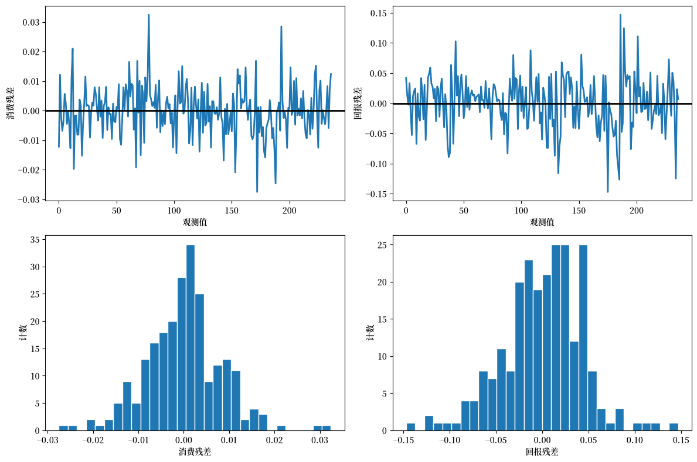

121. 随机消费、风险规避与资产回报的时间行为#
Evans 和 Honkapohja：经济学界对卢卡斯批判最重要的回应是什么？
Sargent：有两个。第一个也是最乐观的回应是完全的理性预期计量经济学。一个理性预期均衡就是一个似然函数。将它最大化。
– An Interview with Thomas J. Sargent [Evans and Honkapohja, 2005]
121.1. 概述#
本讲座描述了 Hansen and Singleton [1983] 如何构建一个完整的资产回报和消费增长的统计模型，然后用最大似然法估计其参数。
他们发现了模型中的一些缺陷，其中一个后来被 Mehra and Prescott [1985] 称为股权溢价之谜。
Hansen and Singleton [1983] 研究了一个基于消费的资产定价模型，其中具有 CRRA 偏好的代表性消费者选择如何在可交易资产之间配置财富。
资产持有的一阶条件是随机欧拉方程，它将消费增长、资产回报和偏好参数联系起来。
Hansen and Singleton [1983] 假设消费增长和资产回报联合服从对数正态分布。
于是欧拉方程对资产价格与回报的联合分布施加了一组限制。
这些限制约束了一个关于消费增长和回报对数的线性时间序列模型，其中对数回报中的可预测变动与对数消费增长中的可预测变动成正比。
Hansen 和 Singleton 通过 最大似然估计 估计了他们的模型。
Hansen and Singleton [1983] 的实证发现构成了 Mehra and Prescott [1985] 后来所称的股权溢价之谜。
为了使本讲座保持聚焦，我们每次只估计一种回报（市场代理或国库券），而不是 Hansen and Singleton [1983] 所研究的完整多资产系统。
我们只使用月度非耐用品消费（
ND）。
from itertools import combinations
import matplotlib.pyplot as plt
import numpy as np
import pandas as pd
from IPython.display import Latex
from scipy import stats
from scipy.linalg import LinAlgError, cholesky, solve_triangular
from scipy.optimize import minimize
from statsmodels.stats.stattools import durbin_watson
import matplotlib as mpl # i18n
FONTPATH = "fonts/SourceHanSerifSC-SemiBold.otf" # i18n
mpl.font_manager.fontManager.addfont(FONTPATH) # i18n
mpl.rcParams['font.family'] = ['Source Han Serif SC'] # i18n
我们还在下面的隐藏单元格中定义一个辅助函数，用于将 DataFrame 显示为 LaTeX 数组
121.2. 欧拉方程#
考虑一个由相同消费者构成的单一商品经济，其效用函数为 CRRA 形式
其中 \(c_t\) 是人均实际总消费，\(U(\cdot)\) 是期间效用函数。
代表性消费者选择一个随机消费计划以最大化时间可加效用函数的期望值，
消费者通过交易 \(N\) 种金融和资本资产的所有权来用现在的消费替代未来的消费。
设 \(\mathbf{w}_t\) 表示在时点 \(t\) 对 \(N\) 种资产的持有量，\(\mathbf{q}_t\) 是资产价格向量，\(\mathbf{d}_t\) 是红利向量，\(y_t\) 是实际劳动收入。
一个可行的消费和投资计划 \(\{c_t, \mathbf{w}_t\}\) 必须满足如下预算约束序列
其中 \((\mathbf{q}_t + \mathbf{d}_t) \cdot \mathbf{w}_t\) 是带入第 \(t\) 期的投资组合的含红利价值。
为了推导一阶条件，对每个时点 \(t\) 的预算约束 (121.3) 附加一个拉格朗日乘子 \(\lambda_t\)，并构造拉格朗日函数
对 \(\mathcal{L}\) 关于 \(c_t\) 求导得
关于 \(w_{i,t+1}\)（即从时点 \(t\) 带入时点 \(t+1\) 的资产 \(i\) 持有量）求导会汇集两项：\(w_{i,t+1}\) 出现在第 \(t\) 期预算约束以及第 \(t+1\) 期约束中：
根据迭代期望法则，这变为
因此，
代入 \(\lambda_t = U'(c_t)\) 和 \(\lambda_{t+1} = U'(c_{t+1})\) 得
两边同除以 \(q_{it}\) 并定义总回报率 \(r_{it+1} := (q_{i,t+1} + d_{i,t+1})/q_{it}\)，得到随机欧拉方程：
其中 \(r_{it+1}\) 是资产 \(i\) 的总实际回报率。
将 CRRA 边际效用 \(U'(c_t) = c_t^{\gamma-1} = c_t^{\alpha}\)（其中 \(\alpha := \gamma - 1\)）代入 (121.5) 并整理得
相对风险规避系数为 \(-\alpha\)。
121.3. 对数正态性下的欧拉方程#
利用上面推导的欧拉方程 (121.6)，我们现在施加 Hansen and Singleton [1983] 的分布假设。
设 \(x_t = c_t / c_{t-1}\) 表示消费比率，并定义 \(u_{it} = x_t^\alpha r_{it}\)，其中 \(r_{it}\) 是资产 \(i\) 的总实际回报率。
欧拉方程 (121.6) 表明 \(E_{t-1}[u_{it}] = 1/\beta\)。
定义对数变量 \(X_t = \log x_t\)、\(R_{it} = \log r_{it}\) 和 \(U_{it} = \log u_{it}\)，使得
假设向量过程 \(\{Y_t\} = \{(X_t, R_{1t}, \ldots, R_{nt})^\top\}\) 是联合平稳且服从高斯分布的。
在此假设下，给定信息集 \(\psi_{t-1}\)，\(U_{it}\) 服从具有常数方差 \(\sigma_i^2\) 的正态分布，且其条件均值 \(\mu_{i,t-1}\) 是过去 \(Y\) 的线性函数。
由于 \(u_{it} = \exp(U_{it})\) 是条件对数正态的，
令 \(E_{t-1}[u_{it}] = 1/\beta\) 并取对数得 \(\mu_{i,t-1} + \sigma_i^2/2 = -\log\beta\)。
现在定义创新
则 \(E_{t-1}[V_{i,t}]=0\)，其中 \(\sigma_i^2=\operatorname{Var}_{t-1}(\alpha X_t + R_{it})\) 在平稳性和高斯假设下为常数。
令 \(E_{t-1}[V_{i,t}] = 0\) 给出条件均值限制
方程 (121.10) 是 Hansen and Singleton [1983] 的核心结果。
每种资产对数回报的可预测部分与对数消费增长的可预测部分成正比，比例因子为 \(-\alpha\)。
截距吸收了贴现因子 \(\beta\) 和对数正态方差项 \(\sigma_i^2 / 2\)。
让我们考虑三个特殊情形，以更好地理解 (121.10) 的含义：
风险中性（\(\alpha = 0\)）：每种资产的对数回报等于一个常数加上一个序列不相关的误差项，因此回报是序列不相关的。
对数效用（\(\alpha = -1\)）：差值 \(R_{it} - X_t\) 没有随时间变化的可预测成分，因此回报和消费增长共享相同的可预测成分。
风险规避（\(\alpha < 0\)）：\(E_{t-1}[R_{it}]\) 中随时间变化的部分等于 \(-\alpha\) 乘以 \(E_{t-1}[X_t]\)，因此 \(|\alpha|\) 越大，预期回报对预期消费增长的敏感度就越被放大。
对于给定的消费-回报协方差结构，更高的相对风险规避（\(-\alpha\)）会扩大风险资产回报与无风险回报之间的差距。
股权溢价之谜之所以出现，是因为观测到的价差很大，但估计的 \(|\alpha|\) 却很小，正如我们即将在估计中看到的那样。
121.4. 受限系统及其似然#
为了构建似然函数，我们需要对条件期望 \(E_{t-1}[X_t]\) 进行参数化。
在单一回报的情形下，记 \(\mathbf{Y}_t = (X_t, R_t)^\top\)，并假设 \(X_t\) 的可预测成分是过去观测值的有限阶线性函数：
其中 \(\mathbf{a}(L)\) 是过去 \((X, R)\) 上的滞后多项式系数向量，\(\mu_x\) 是一个常数。
消费增长方程是不受限制的，因此 \(X_t\) 自由地依赖于它自身的滞后值和滞后回报。
然而，回报方程受欧拉方程的限制。
将 (121.10) 与 (121.11) 结合起来，迫使 \(R_t\) 的可预测部分等于 \(-\alpha\) 乘以 \(X_t\) 的可预测部分再加上一个常数。
这给出了受限系统
其中
其中在条件同方差下 \(\sigma_U^2 := \operatorname{Var}_{t-1}(\alpha X_t + R_t) = \alpha^2 \sigma_{XX} + \sigma_{RR} + 2\alpha \sigma_{XR}\)。
\(\boldsymbol{\mu}\) 第二个元素中的符号直接由 (121.10) 得出。
创新 \(\mathbf{V}_t\) 假设服从密度为 \(f_V(\mathbf{v})\) 的高斯分布。
由于 \(\mathbf{V}_t = \mathbf{A}_0 \mathbf{Y}_t - \mathbf{A}_1(L)\mathbf{Y}_{t-1} - \boldsymbol{\mu}\)，可观测量 \(\mathbf{Y}_t\) 是 \(\mathbf{V}_t\) 的线性变换，即 \(\mathbf{Y}_t = \mathbf{A}_0^{-1}(\mathbf{V}_t + \mathbf{A}_1(L)\mathbf{Y}_{t-1} + \boldsymbol{\mu})\)。
密度的变量替换公式给出
由于 \(\mathbf{A}_0\) 是单位下三角矩阵，\(\det(\mathbf{A}_0) = 1\)，所以雅可比项消失，\(\mathbf{Y}_t\) 的对数似然等于在残差处求值的 \(\mathbf{V}_t\) 的对数似然。
由于雅可比为一，\(\mathbf{Y}_t\) 的条件密度就是在 \(\mathbf{v}_t = \mathbf{A}_0 \mathbf{Y}_t - \mathbf{A}_1(L)\mathbf{Y}_{t-1} - \boldsymbol{\mu}\) 处求值的 \(\mathbf{V}_t\) 的高斯密度。
对于单个观测值，\(\mathbf{V}_t \sim N(\mathbf{0}, \boldsymbol{\Sigma})\) 的密度为
取对数得
对 \(T\) 个观测值求和并舍去常数 \(-T\log(2\pi)\)，得到对数似然函数
其中 \(\boldsymbol{\Sigma}\) 是创新 \(\mathbf{V}_t\) 的协方差矩阵，\(\theta\) 汇集了所有自由参数，包括 \(\alpha\)、\(\beta\)、协方差参数、第一行截距 \(\mu_x\) 以及第一行滞后系数。
由 (121.6) 施加的限制通过 (121.13) 中 \(\mathbf{A}_0\)、\(\mathbf{A}_1(L)\) 和 \(\boldsymbol{\mu}\) 的结构进入 (121.14)。
(121.12) 的第二行没有自由滞后系数，其截距由 \(\alpha\)、\(\beta\) 和 \(\boldsymbol{\Sigma}\) 决定。
一个替代的无限制二元 VAR(\(p\)) 会自由地估计 (121.12) 的两行。
每一行有 1 个截距加上 \(2p\) 个滞后系数（\(p\) 个滞后 \(\times\) 2 个变量），给出 \(2(1 + 2p)\) 个均值参数。
再加上 3 个自由协方差参数（\(\sigma_{XX}, \sigma_{RR}, \sigma_{XR}\)），总共有 \(5 + 4p\) 个参数。
受限系统 (121.12) 只有 \(6 + 2p\) 个自由参数：第一行贡献 \(1 + 2p\) 个（它的截距 \(\mu_x\) 和 \(2p\) 个滞后系数），再加上 \(\alpha\)、\(\beta\) 和 3 个协方差参数。
第二行不增加任何参数，因为它的滞后结构和截距通过 (121.10) 由 \(\alpha\)、\(\beta\) 和 \(\boldsymbol{\Sigma}\) 确定。
差值 \((\smash{5 + 4p}) - (\smash{6 + 2p}) = 2p - 1\) 给出了我们即将执行的似然比检验的自由度。
121.5. 似然的实现#
现在让我们实现似然 (121.14)。
组成部分有：
一个用于构造滞后数据矩阵 \((\mathbf{Y}_t, \mathbf{Y}_{t-1}, \ldots, \mathbf{Y}_{t-p})\) 的函数，
一个将参数向量映射到矩阵 \(\mathbf{A}_0\)、\(\mathbf{A}_1\)、\(\boldsymbol{\mu}\)、\(\boldsymbol{\Sigma}\) 的函数，
一个计算受限系统残差 \(\mathbf{V}_t = \mathbf{A}_0 \mathbf{Y}_t - \mathbf{A}_1(L) \mathbf{Y}_{t-1} - \boldsymbol{\mu}\) 的函数，以及
高斯对数似然本身。
由于我们处理的是对数变换后的数据，我们在下面定义一个用于该变换的辅助函数
def to_mle_array(data):
valid = (data[:, 0] > 0.0) & (data[:, 1] > 0.0)
return np.column_stack(
[np.log(data[valid, 1]), np.log(data[valid, 0])])
首先我们构建滞后数据矩阵，它们是似然函数的输入
def build_lagged_data(data, n_lags):
"""
为二元数据构建 Y_t 和滞后堆栈 [Y_{t-1}, ..., Y_{t-p}]。
"""
if data.ndim != 2 or data.shape[1] != 2:
raise ValueError("data must be T x 2.")
if data.shape[0] <= n_lags:
raise ValueError("Sample size must exceed n_lags.")
t_obs = data.shape[0]
n_obs = t_obs - n_lags
y_t = data[n_lags:, :]
y_lag = np.empty((n_obs, 2 * n_lags))
for lag in range(1, n_lags + 1):
y_lag[:, 2 * (lag - 1) : 2 * lag] = data[n_lags - lag : t_obs - lag, :]
return y_t, y_lag
接下来，我们验证并解包参数向量，同时施加可行性条件
def unpack_parameters(params, n_lags):
"""
验证并解包参数向量。
"""
if len(params) != 6 + 2 * n_lags:
return None
α, β, σ_x, σ_r, cov_xr, μ_x = params[:6]
a_lags = params[6:]
tol = 1e-8
if not np.isfinite(α):
return None
if not (tol < β):
return None
if not (σ_x > tol and σ_r > tol):
return None
Σ = np.array(
[
[σ_x ** 2, cov_xr],
[cov_xr, σ_r ** 2],
]
)
try:
cholesky(Σ, lower=True)
except (LinAlgError, ValueError):
return None
return {
"α": np.array(α),
"β": np.array(β),
"σ_x": np.array(σ_x),
"σ_r": np.array(σ_r),
"cov_xr": np.array(cov_xr),
"μ_x": np.array(μ_x),
"a_lags": a_lags,
}
下一步将参数和滞后数据映射到受限系统的残差
def restricted_residuals(
params,
y_t,
y_lag,
n_lags,
):
"""
计算由 A0 Y_t - A1 Y_{t-1} - mu 隐含的 V_t。
"""
parsed = unpack_parameters(params, n_lags)
if parsed is None:
return None
α = float(parsed["α"])
β = float(parsed["β"])
σ_x = float(parsed["σ_x"])
σ_r = float(parsed["σ_r"])
cov_xr = float(parsed["cov_xr"])
μ_x = float(parsed["μ_x"])
a_lags = np.asarray(parsed["a_lags"])
A0 = np.array([[1.0, 0.0], [α, 1.0]])
A1 = np.zeros((2, 2 * n_lags))
A1[0, :] = a_lags
σ_u2 = α ** 2 * σ_x ** 2 + σ_r ** 2 + 2.0 * α * cov_xr
μ = np.array([μ_x, -np.log(β) - 0.5 * σ_u2])
resid = y_t @ A0.T - y_lag @ A1.T - μ[None, :]
if np.any(np.abs(resid) > 1e10):
return None
return resid
这种递归结构也让我们能够从模型中模拟数据。
我们可以通过抽取创新 \(\mathbf{V}_t \sim N(\mathbf{0}, \boldsymbol{\Sigma})\) 并向前计算 \(\mathbf{Y}_t = \mathbf{A}_0^{-1}(\mathbf{A}_1(L) \mathbf{Y}_{t-1} + \boldsymbol{\mu} + \mathbf{V}_t)\) 来从模型生成数据。
这对于通过蒙特卡洛检查似然实现很有用
def simulate_restricted_var(
params,
n_obs,
n_lags,
burn_in=200,
seed=0,
):
"""
从受限模型模拟 [对数消费增长, 对数回报]。
"""
if seed is not None:
np.random.seed(seed)
if len(params) != 6 + 2 * n_lags:
raise ValueError("Parameter vector length must be 6 + 2 * n_lags.")
α, β, σ_x, σ_r, cov_xr, μ_x = params[:6]
a_lags = params[6:]
Σ_e = np.array(
[
[σ_x ** 2, cov_xr],
[cov_xr, σ_r ** 2],
]
)
A0 = np.array([[1.0, 0.0], [α, 1.0]])
Σ_v = A0 @ Σ_e @ A0.T
eigvals = np.linalg.eigvals(Σ_v)
if np.min(eigvals) <= 0.0:
Σ_v += np.eye(2) * 1e-6
A1 = np.zeros((2, 2 * n_lags))
A1[0, :] = a_lags
σ_u2 = α ** 2 * σ_x ** 2 + σ_r ** 2 + 2.0 * α * cov_xr
μ = np.array([μ_x, -np.log(β) - 0.5 * σ_u2])
total_n = n_obs + burn_in
y = np.zeros((total_n, 2))
for t in range(n_lags, total_n):
lag_stack = []
for lag in range(1, n_lags + 1):
lag_stack.append(y[t - lag, :])
lag_vec = np.concatenate(lag_stack)
shock = np.random.multivariate_normal(np.zeros(2), Σ_v)
y[t, :] = np.linalg.solve(A0, A1 @ lag_vec + μ + shock)
return y[burn_in:, :]
接下来，我们编码由残差协方差矩阵隐含的高斯对数似然
def log_likelihood_mle(
params,
y_t,
y_lag,
n_lags,
include_const=True,
):
"""
为受限系统计算高斯对数似然。
"""
parsed = unpack_parameters(params, n_lags)
if parsed is None:
return -np.inf
resid = restricted_residuals(params, y_t, y_lag, n_lags)
if resid is None:
return -np.inf
α = float(parsed["α"])
σ_x = float(parsed["σ_x"])
σ_r = float(parsed["σ_r"])
cov_xr = float(parsed["cov_xr"])
Σ_e = np.array(
[
[σ_x ** 2, cov_xr],
[cov_xr, σ_r ** 2],
]
)
A0 = np.array([[1.0, 0.0], [α, 1.0]])
Σ_v = A0 @ Σ_e @ A0.T
try:
chol = cholesky(Σ_v, lower=True)
log_det = 2.0 * np.sum(np.log(np.diag(chol) + 1e-16))
std_resid = solve_triangular(chol, resid.T, lower=True).T
quad_form = np.sum(std_resid ** 2)
except (LinAlgError, ValueError):
return -np.inf
sample_size = y_t.shape[0]
ll = -0.5 * sample_size * log_det - 0.5 * quad_form
if include_const:
ll -= sample_size * np.log(2.0 * np.pi)
if np.isnan(ll) or np.isinf(ll):
return -np.inf
return float(ll)
为了将其传递给数值优化器，我们将对数似然包装为一个最小化目标
def negative_log_likelihood(
params,
y_t,
y_lag,
n_lags,
):
"""
返回用于最小化的负对数似然。
"""
ll = log_likelihood_mle(params, y_t, y_lag, n_lags, include_const=False)
if np.isfinite(ll):
return -ll
return 1e20
我们为多起点优化设置参数界限并生成由数据驱动的起始值。
我们保持 \(\beta\) 为正，但在估计中不强制 \(\beta < 1\)
def parameter_bounds(n_lags):
"""
优化的界限。
"""
bounds = [
(-200.0, 200.0), # α（= -风险规避）
(1e-8, 2.0), # β（贴现因子）
(1e-8, None), # σ_x（消费创新的标准差）
(1e-8, None), # σ_r（回报创新的标准差）
(None, None), # cov_xr（协方差）
(None, None), # μ_x（消费增长截距）
]
bounds += [(-0.99, 0.99)] * (2 * n_lags) # VAR 滞后系数
return bounds
我们使用多个起始向量来帮助局部求解器摆脱糟糕的初始化
def starting_values(y_t, y_lag, n_lags, n_starts=10):
"""
生成多个起始值。
"""
rng = np.random.default_rng(123)
starts = []
n_params = 6 + 2 * n_lags
base = np.zeros(n_params)
base[0] = -0.5
base[1] = 0.999
base[2] = max(float(np.std(y_t[:, 0])), 1e-3)
base[3] = max(float(np.std(y_t[:, 1])), 1e-3)
base[4] = float(np.cov(y_t.T)[0, 1])
base[5] = float(np.mean(y_t[:, 0]))
base[6:] = 0.1
starts.append(base.copy())
# 来自无限制 VAR 的 OLS 种子
n_obs = y_t.shape[0]
x = np.column_stack([np.ones(n_obs), y_lag])
coef = np.linalg.lstsq(x, y_t, rcond=None)[0]
resid = y_t - x @ coef
Σ_e = resid.T @ resid / max(1, n_obs)
a_lags_ols = coef[1:, 0]
r_lags_ols = coef[1:, 1]
denom = float(a_lags_ols @ a_lags_ols)
if denom > 1e-10:
α_ols = -float((a_lags_ols @ r_lags_ols) / denom)
else:
α_ols = -0.5
μ_x_ols = float(coef[0, 0])
μ_r_ols = float(coef[0, 1])
σ_x_ols = float(np.sqrt(max(Σ_e[0, 0], 1e-8)))
σ_r_ols = float(np.sqrt(max(Σ_e[1, 1], 1e-8)))
cov_xr_ols = float(Σ_e[0, 1])
σ_u2_ols = (
α_ols ** 2 * σ_x_ols ** 2
+ σ_r_ols ** 2
+ 2.0 * α_ols * cov_xr_ols
)
β_ols = float(np.exp(-(μ_r_ols + α_ols * μ_x_ols + 0.5 * σ_u2_ols)))
β_ols = float(np.clip(β_ols, 1e-6, 2.0))
ols_seed = np.zeros(n_params)
ols_seed[0] = α_ols
ols_seed[1] = β_ols
ols_seed[2] = σ_x_ols
ols_seed[3] = σ_r_ols
ols_seed[4] = cov_xr_ols
ols_seed[5] = μ_x_ols
ols_seed[6:] = a_lags_ols
starts.append(ols_seed.copy())
seeds = [base, ols_seed]
while len(starts) < n_starts:
seed = seeds[len(starts) % len(seeds)]
trial = seed.copy()
trial[:2] += rng.normal(0.0, 0.2, 2)
trial[2:6] *= 1.0 + rng.normal(0.0, 0.15, 4)
trial[6:] += rng.normal(0.0, 0.08, 2 * n_lags)
trial[1] = max(trial[1], 1e-6)
trial[2] = max(trial[2], 1e-6)
trial[3] = max(trial[3], 1e-6)
starts.append(trial)
return starts
标准误来自信息矩阵的梯度外积（OPG）近似，通过对每个观测的对数似然贡献进行有限差分计算得到。
在此应用中，这往往比有限差分海森矩阵在数值上更稳定。
def log_likelihood_contributions(
params,
y_t,
y_lag,
n_lags,
include_const=False,
):
"""
每个观测的高斯对数似然贡献向量。
返回一个长度为 T 的数组，如果参数向量不可行则返回 None。
"""
parsed = unpack_parameters(params, n_lags)
if parsed is None:
return None
resid = restricted_residuals(params, y_t, y_lag, n_lags)
if resid is None:
return None
α = float(parsed["α"])
σ_x = float(parsed["σ_x"])
σ_r = float(parsed["σ_r"])
cov_xr = float(parsed["cov_xr"])
Σ_e = np.array(
[
[σ_x ** 2, cov_xr],
[cov_xr, σ_r ** 2],
]
)
A0 = np.array([[1.0, 0.0], [α, 1.0]])
Σ_v = A0 @ Σ_e @ A0.T
try:
chol = cholesky(Σ_v, lower=True)
log_det = 2.0 * np.sum(np.log(np.diag(chol) + 1e-16))
std_resid = solve_triangular(chol, resid.T, lower=True).T
except (LinAlgError, ValueError):
return None
quad = np.sum(std_resid ** 2, axis=1)
ll_t = -0.5 * log_det - 0.5 * quad
if include_const:
ll_t -= np.log(2.0 * np.pi)
if not np.all(np.isfinite(ll_t)):
return None
return ll_t
def opg_standard_errors(
params,
y_t,
y_lag,
n_lags,
step=1e-6,
max_step_shrink=12,
eig_floor=1e-12,
):
"""
通过信息矩阵的 OPG 近似计算标准误。
"""
n = len(params)
ll0 = log_likelihood_contributions(params, y_t, y_lag, n_lags, include_const=False)
if ll0 is None:
return np.full(n, np.nan)
n_obs = int(ll0.shape[0])
scores = np.empty((n_obs, n))
for i in range(n):
base_step = step * (abs(params[i]) + 1.0)
hi = base_step
ll_plus = None
ll_minus = None
for _ in range(max_step_shrink + 1):
p_plus = params.copy()
p_minus = params.copy()
p_plus[i] += hi
p_minus[i] -= hi
ll_plus = log_likelihood_contributions(
p_plus, y_t, y_lag, n_lags, include_const=False
)
ll_minus = log_likelihood_contributions(
p_minus, y_t, y_lag, n_lags, include_const=False
)
if ll_plus is not None and ll_minus is not None:
break
hi *= 0.5
if ll_plus is None or ll_minus is None:
return np.full(n, np.nan)
scores[:, i] = (ll_plus - ll_minus) / (2.0 * hi)
if not np.all(np.isfinite(scores)):
return np.full(n, np.nan)
# 将得分居中以减轻数值漂移
scores = scores - scores.mean(axis=0, keepdims=True)
opg = scores.T @ scores
if not np.all(np.isfinite(opg)):
return np.full(n, np.nan)
opg = 0.5 * (opg + opg.T)
try:
eigvals, eigvecs = np.linalg.eigh(opg)
except (LinAlgError, ValueError):
return np.full(n, np.nan)
floor = float(eig_floor) * max(1.0, float(np.max(eigvals)))
eigvals = np.clip(eigvals, floor, None)
cov = eigvecs @ np.diag(1.0 / eigvals) @ eigvecs.T
se = np.sqrt(np.maximum(np.diag(cov), 0.0))
se[~np.isfinite(se)] = np.nan
return se
下面的多起点 MLE 估计器组合了这些部分并返回参数、拟合准则和残差
def estimate_mle(data, n_lags, verbose=False):
"""
通过多起点局部优化估计受限模型。
"""
y_t, y_lag = build_lagged_data(data, n_lags)
bounds = parameter_bounds(n_lags)
starts = starting_values(y_t, y_lag, n_lags)
best_result = None
best_ll = -np.inf
for i, x0 in enumerate(starts):
try:
result = minimize(
negative_log_likelihood,
x0=x0,
args=(y_t, y_lag, n_lags),
method="L-BFGS-B",
bounds=bounds,
)
except Exception:
continue
if np.isfinite(result.fun):
ll_val = log_likelihood_mle(result.x, y_t, y_lag, n_lags)
if np.isfinite(ll_val) and ll_val > best_ll:
best_ll = ll_val
best_result = result
if verbose:
print(
f"start={i}, success={result.success}, "
f"status={result.status}, loglike={ll_val:.2f}"
)
n_params = 6 + 2 * n_lags
if best_result is None:
return {
"params": np.full(n_params, np.nan),
"se": np.full(n_params, np.nan),
"loglike": -np.inf,
"converged": False,
"optimizer_success": False,
"residuals": None,
"n_obs": int(y_t.shape[0]),
}
params = best_result.x
se = opg_standard_errors(params, y_t, y_lag, n_lags)
resid = restricted_residuals(params, y_t, y_lag, n_lags)
ll_val = log_likelihood_mle(params, y_t, y_lag, n_lags)
return {
"params": params,
"se": se,
"loglike": ll_val,
"converged": bool(np.isfinite(ll_val)),
"optimizer_success": bool(best_result.success),
"residuals": resid,
"n_obs": int(y_t.shape[0]),
}
下面的残差诊断总结了正态性和序列相关性检查
def residual_diagnostics(resid):
"""
计算基本残差诊断。
"""
out = {}
for i, label in enumerate(["consumption", "return"]):
jb_stat, jb_pval = stats.jarque_bera(resid[:, i])
out[f"{label}_jb_stat"] = float(jb_stat)
out[f"{label}_jb_pval"] = float(jb_pval)
out[f"{label}_dw"] = float(durbin_watson(resid[:, i]))
return out
最后，一个滞后循环包装器在不同滞后长度下运行 MLE 并将结果收集到 DataFrame 中
def run_mle_by_lag(
data,
lags=(2, 4, 6),
verbose=False,
):
"""
按滞后长度估计受限 MLE 模型。
"""
rows = []
fits = {}
for lag in lags:
fit = estimate_mle(data, n_lags=lag, verbose=verbose)
fits[lag] = fit
rows.append(
{
"NLAG": lag,
"α_hat": fit["params"][0],
"se_α": fit["se"][0],
"β_hat": fit["params"][1],
"se_β": fit["se"][1],
"loglike": fit["loglike"],
"n_obs": fit["n_obs"],
}
)
table = pd.DataFrame(rows).set_index("NLAG")
return table, fits
121.5.1. 模拟#
在将似然应用于真实数据之前，我们先验证它能从受限系统生成的模拟数据中恢复已知参数。
对于 n_lags = 1，参数向量为
其中最后两项是 \(X_t\) 的第一行回归中 \(X_{t-1}\) 和 \(R_{t-1}\) 的系数。
更一般地，对于 n_lags = p，我们按顺序 \([a_{x,1}, a_{r,1}, \ldots, a_{x,p}, a_{r,p}]\) 打包 a_lags，因此完整参数向量的长度为 \(6 + 2p\)。
协方差参数 \((\sigma_x, \sigma_r, \sigma_{xr})\) 描述了 \((X_t, R_t)\) 的简化式冲击：如果 \(\boldsymbol{\varepsilon}_t = (\varepsilon_{x,t}, \varepsilon_{r,t})^\top \sim N(0, \boldsymbol{\Sigma}_\varepsilon)\)，那么 \(\boldsymbol{\Sigma}_\varepsilon = \begin{bmatrix}\sigma_x^2 & \sigma_{xr}\\ \sigma_{xr} & \sigma_r^2\end{bmatrix}\)。
受限系统的创新为 \(\mathbf{V}_t = \mathbf{A}_0 \boldsymbol{\varepsilon}_t\)，因此其协方差为 \(\boldsymbol{\Sigma}_V = \mathbf{A}_0 \boldsymbol{\Sigma}_\varepsilon \mathbf{A}_0^\top\)，这正是进入似然的量。
在模拟递归中，我们抽取 \(\mathbf{V}_t \sim N(0, \boldsymbol{\Sigma}_V)\) 并向前计算 \(\mathbf{Y}_t = \mathbf{A}_0^{-1}(\mathbf{A}_1(L)\mathbf{Y}_{t-1} + \boldsymbol{\mu} + \mathbf{V}_t)\)。
下表将真实参数与来自大型模拟样本的 MLE 估计进行比较
α_true = -1.00
β_true = 0.993
σ_x_true = 0.015
σ_r_true = 0.020
cov_xr_true = 0.0001
μ_x_true = 0.002
a_x1_true = 0.40
a_r1_true = 0.10
true_params = np.array(
[
α_true,
β_true,
σ_x_true,
σ_r_true,
cov_xr_true,
μ_x_true,
a_x1_true,
a_r1_true,
]
)
sim_mle_data = simulate_restricted_var(
params=true_params,
n_obs=50000,
n_lags=1,
burn_in=5000,
seed=0,
)
fit_sim = estimate_mle(sim_mle_data, n_lags=1, verbose=False)
点估计接近真实参数，而针对”真实值正确”这一原假设的 t 统计量在数量级上很小，与抽样变异一致。
121.6. 偏好参数与似然比检验#
受限系统通过跨方程限制嵌入了偏好参数。
参数 \(\alpha\) 将回报的可预测变动与消费增长的可预测变动联系起来。
在该模型下，回报方程对滞后变量的依赖完全由 \(-\alpha\) 乘以消费方程的滞后系数所决定。
参数 \(\beta\) 通过 \(-\log\beta - \sigma_U^2/2\) 移动回报方程的截距。
Hansen and Singleton [1983] 通过将受限系统与在相同样本上估计的无限制二元 VAR 进行比较来检验这些限制。
如果欧拉方程施加的限制是正确的，那么受限模型的拟合应该几乎和无限制模型一样好。
标准检验是似然比统计量
其中 \(\ell_u\) 和 \(\ell_r\) 是无限制和受限模型的最大化对数似然，\(d\) 是自由参数数量的差值。
两个似然必须在相同的有效样本上求值，LR 分布才有效。
Hansen and Singleton [1983] 报告称，对于价值加权的总股票回报，\(\chi^2\) 检验统计量几乎没有提供反对模型的证据。
在下面的表格中，我们报告 chi2.cdf(LR, df)（对应于 HS 在括号中所报告的内容）和通常的右尾 p(LR) = 1 - chi2.cdf
def likelihood_ratio_test(
fit_restricted,
fit_unrestricted,
df_diff,
):
"""
使用 LR 检验比较嵌套设定。
"""
if not (fit_restricted["converged"] and fit_unrestricted["converged"]):
return {"lr_stat": np.nan, "p_value": np.nan, "chi2_cdf": np.nan}
if fit_restricted.get("n_obs") != fit_unrestricted.get("n_obs"):
return {"lr_stat": np.nan, "p_value": np.nan, "chi2_cdf": np.nan}
lr_stat = 2.0 * (fit_unrestricted["loglike"] - fit_restricted["loglike"])
chi2_cdf = stats.chi2.cdf(lr_stat, df=df_diff)
p_value = 1.0 - chi2_cdf
return {
"lr_stat": float(lr_stat),
"p_value": float(p_value),
"chi2_cdf": float(chi2_cdf),
}
无限制基准是关于 \(\mathbf{Y}_t = (X_t, R_t)^\top\) 的高斯 VAR，其中两个方程中所有滞后项的系数都是自由的。
def estimate_unrestricted_var(data, n_lags):
"""
为 Y_t = [X_t, R_t] 估计一个无限制高斯 VAR。
"""
y_t, y_lag = build_lagged_data(data, n_lags)
n_obs = y_t.shape[0]
x = np.column_stack([np.ones(n_obs), y_lag])
coef = np.linalg.lstsq(x, y_t, rcond=None)[0]
resid = y_t - x @ coef
Σ = resid.T @ resid / n_obs
try:
chol = cholesky(Σ, lower=True)
log_det = 2.0 * np.sum(np.log(np.diag(chol) + 1e-16))
std_resid = solve_triangular(chol, resid.T, lower=True).T
quad_form = np.sum(std_resid ** 2)
except (LinAlgError, ValueError):
return {
"coef": coef,
"Σ": np.full((2, 2), np.nan),
"residuals": resid,
"loglike": -np.inf,
"converged": False,
"n_obs": int(n_obs),
}
d = y_t.shape[1]
loglike = float(-0.5 * n_obs * d * np.log(2.0 * np.pi)
- 0.5 * n_obs * log_det - 0.5 * quad_form)
return {
"coef": coef,
"Σ": Σ,
"residuals": resid,
"loglike": loglike,
"converged": True,
"n_obs": int(n_obs),
}
def run_unrestricted_var_by_lag(data, lags=(2, 4, 6)):
"""
按滞后长度估计无限制 VAR 模型。
"""
rows = []
fits = {}
for lag in lags:
fit = estimate_unrestricted_var(data, n_lags=lag)
fits[lag] = fit
rows.append(
{
"NLAG": lag,
"loglike": fit["loglike"],
"n_obs": fit["n_obs"],
}
)
table = pd.DataFrame(rows).set_index("NLAG")
return table, fits
以下函数在每个滞后长度下计算 LR 统计量，复现了 Hansen and Singleton [1983] 中表 1 的检验策略。
def restricted_vs_unrestricted_lr(mle_fits, unrestricted_fits, lags=(2, 4, 6)):
"""
计算受限模型与无限制 VAR 的 LR 检验。
"""
rows = []
for lag in lags:
fit_r = mle_fits[lag]
fit_u = unrestricted_fits[lag]
df_diff = (2 * (1 + 2 * lag) + 3) - (6 + 2 * lag)
lr = likelihood_ratio_test(fit_restricted=fit_r, fit_unrestricted=fit_u, df_diff=df_diff)
rows.append(
{
"NLAG": lag,
"lr_stat": lr["lr_stat"],
"p_value": lr["p_value"],
"chi2_cdf": lr["chi2_cdf"],
"df": df_diff,
"T": fit_r.get("n_obs", np.nan),
}
)
return pd.DataFrame(rows).set_index("NLAG")
121.7. 可预测性与 R 平方限制#
Hansen and Singleton [1983] 的第二部分强调了受限系统对回报可预测性的一个含义。
由 (121.10) 和 (121.11)，对数回报的可预测成分为
由于可预测回报是可预测消费增长的线性函数，可预测回报成分的方差恰好等于 \(\alpha^2\) 乘以可预测消费增长成分的方差：
Hansen and Singleton [1983] 推导出回报投影到 \(\psi_{t-1}\) 上所隐含的 \(R^2\)：
如果 \(\alpha = 0\)（风险中性），那么 \(R_R^2 = 0\)，资产回报不可预测。
如果 \(\alpha = -1\)（对数效用），那么 \(R_t - X_t\) 不可预测，因此回报和消费增长共享相同的可预测成分。
更一般地，只要不可预测回报成分的方差 \(\operatorname{Var}(R_t \mid \psi_{t-1})\) 相对于可预测方差较大，回报的 \(R_R^2\) 就会很小，而这正是股票回报的情形。
下面的函数报告：
由欧拉方程隐含的限制方的可预测方差项，以及
来自无限制 VAR 的 \(R_X^2\) 和 \(R_R^2\)。
def predictability_metrics(data, restricted_fit, unrestricted_fit, n_lags):
"""
计算可预测成分度量和无限制 VAR 的 R^2 值。
"""
y_t, y_lag = build_lagged_data(data, n_lags)
parsed = unpack_parameters(restricted_fit["params"], n_lags)
α = float(parsed["α"])
β = float(parsed["β"])
σ_x = float(parsed["σ_x"])
σ_r = float(parsed["σ_r"])
cov_xr = float(parsed["cov_xr"])
μ_x = float(parsed["μ_x"])
a_lags = np.asarray(parsed["a_lags"])
pred_x = y_lag @ a_lags + μ_x
σ_u2 = α ** 2 * σ_x ** 2 + σ_r ** 2 + 2.0 * α * cov_xr
pred_r = -α * pred_x - np.log(β) - 0.5 * σ_u2
x = y_t[:, 0]
r = y_t[:, 1]
resid_x = x - pred_x
resid_r = r - pred_r
r2_x = 1.0 - np.var(resid_x) / np.var(x)
r2_r = 1.0 - np.var(resid_r) / np.var(r)
if unrestricted_fit["converged"] and unrestricted_fit.get("coef") is not None:
n_obs = y_t.shape[0]
x_u = np.column_stack([np.ones(n_obs), y_lag])
pred_u = x_u @ unrestricted_fit["coef"]
resid_u = y_t - pred_u
var_x = np.var(y_t[:, 0])
var_r = np.var(y_t[:, 1])
r2_x_unres = np.nan if var_x <= 0.0 else 1.0 - np.var(resid_u[:, 0]) / var_x
r2_r_unres = np.nan if var_r <= 0.0 else 1.0 - np.var(resid_u[:, 1]) / var_r
else:
r2_x_unres = np.nan
r2_r_unres = np.nan
return {
"alpha_hat": α,
"var_pred_x": float(np.var(pred_x)),
"var_pred_r": float(np.var(pred_r)),
"alpha2_var_pred_x": float(α ** 2 * np.var(pred_x)),
"r2_x_restricted": float(r2_x),
"r2_r_restricted": float(r2_r),
"r2_x_unrestricted": float(r2_x_unres),
"r2_r_unrestricted": float(r2_r_unres),
"T": int(y_t.shape[0]),
}
121.8. 回报差异检验#
Hansen and Singleton [1983] 还提出了基于不同资产间对数回报差异的检验。
由 (121.10)，资产 \(i\) 对数回报的条件均值为 \(E_{t-1}[R_{it}] = -\alpha\, E_{t-1}[X_t] - \log\beta - \sigma_i^2/2\)。
\(-\alpha\, E_{t-1}[X_t] - \log\beta\) 这一项对所有资产都相同，因此它在差异中被抵消：
这是一个不依赖于 \((t-1)\) 时刻信息的常数。
因此，如果模型正确，回报差异应该是不可预测的，无论 \(\alpha\) 和 \(\beta\) 取何值。
这些检验避免了测量消费的需要，代价是失去了识别 \(\alpha\) 和 \(\beta\) 的能力。
Hansen and Singleton [1983] 报告称，对于具有多种股票回报的模型，回报差异限制被强烈拒绝，即使消除了消费测量问题，也提供了大量反对 CRRA-对数正态设定的证据。
下面的代码是对这一逻辑在模拟数据上的说明。
复现论文的实证回报差异表格需要估计超出本讲座范围的多资产系统
def simulate_multi_asset_nominal_returns(
n_obs,
n_assets=3,
α_true=-1.0,
β_true=0.993,
seed=0,
):
"""
模拟满足 E_t[beta * exp(alpha X) * r_i] = 1 的对数名义回报。
"""
if n_assets < 2:
raise ValueError("n_assets must be at least 2.")
rng = np.random.default_rng(seed)
x = np.empty(n_obs)
x[0] = 0.001
for t in range(1, n_obs):
x[t] = 0.001 + 0.4 * (x[t - 1] - 0.001) + 0.006 * rng.standard_normal()
sigmas = np.linspace(0.03, 0.06, n_assets)
eps = rng.standard_normal((n_obs, n_assets)) * sigmas
log_returns = -np.log(β_true) - α_true * x[:, None] + eps \
- 0.5 * sigmas[None, :] ** 2
return x, log_returns
def return_difference_test(log_returns, n_lags=2):
"""
检验成对对数回报差异的可预测性。
"""
if log_returns.ndim != 2 or log_returns.shape[1] < 2:
raise ValueError("log_returns must be T x m with m >= 2.")
if log_returns.shape[0] <= n_lags + 1:
raise ValueError("Sample size must exceed n_lags + 1.")
t_obs, n_assets = log_returns.shape
pairs = list(combinations(range(n_assets), 2))
n_obs = t_obs - n_lags - 1
z = np.empty((n_obs, 1 + n_assets * n_lags))
z[:, 0] = 1.0
for j in range(n_lags):
z[:, 1 + j * n_assets : 1 + (j + 1) * n_assets] = log_returns[
n_lags - j : t_obs - 1 - j, :
]
rows = []
for i, j in pairs:
y = log_returns[n_lags + 1 :, i] - log_returns[n_lags + 1 :, j]
coef = np.linalg.lstsq(z, y, rcond=None)[0]
resid = y - z @ coef
sigma2 = float((resid @ resid) / max(1, n_obs - z.shape[1]))
cov = sigma2 * np.linalg.pinv(z.T @ z)
slopes = coef[1:]
cov_slopes = cov[1:, 1:]
stat = float(slopes @ np.linalg.pinv(cov_slopes) @ slopes)
p_value = float(1.0 - stats.chi2.cdf(stat, df=slopes.shape[0]))
rows.append(
{
"pair": f"{i+1}-{j+1}",
"wald_chi2": stat,
"p_value": p_value,
"mean_spread": float(np.mean(y)),
}
)
return pd.DataFrame(rows).set_index("pair")
我们在具有 \(m = 3\) 种资产的模拟数据上运行 return_difference_test，给出 \(\binom{3}{2} = 3\) 对。
对于每一对，该函数将回报价差回归到一个常数和所有资产回报的 n_lags 个滞后上，然后使用 Wald \(\chi^2\) 统计量检验斜率系数是否联合为零
_, sim_log_returns = simulate_multi_asset_nominal_returns(
n_obs=1500,
n_assets=3,
α_true=-1.0,
β_true=0.993,
seed=0,
)
spread_test = return_difference_test(sim_log_returns, n_lags=2)
spread_pretty = spread_test.rename(columns={
"wald_chi2": r"\chi^2", "p_value": "p", "mean_spread": r"\overline{\Delta R}",
})
display_table(spread_pretty, fmt={
r"\chi^2": "{:.3f}",
"p": "{:.3f}",
r"\overline{\Delta R}": "{:.5f}",
})
较大的 \(p\) 值证实了在此模拟中回报差异是不可预测的，正如当 \(\alpha = -1\) 时模型所预测的那样。
121.9. 实证 MLE 估计#
现在我们将 Hansen and Singleton [1983] 的最大似然估计器应用于真实数据。
121.9.1. 数据#
本讲座和配套讲座 用广义矩方法估计欧拉方程 使用相同的数据构造。
Hansen and Singleton [1982] 和 Hansen and Singleton [1983] 使用了来自 CRSP 的 1959:2 至 1978:12 期间的月度人均实际消费（非耐用品）和股票回报数据。
为了与论文保持一致，我们将默认样本设为 1959:2–1978:12。
你可以传入不同的 start 和 end 日期来研究后续时期。
本讲座从 Ken French 数据库（F-F_Research_Data_Factors）中提取股票市场和一个月期国库券回报，并将总名义回报构造为市场的 1 + (Mkt-RF + RF)/100 和国库券的 1 + RF/100。
Mkt-RF 是所有 CRSP 公司的价值加权回报减去无风险利率，RF 是一个月期国库券回报（详情请参阅此处）。
虽然 Hansen-Singleton 使用 CRSP 价值加权 NYSE 回报，但我们使用 Ken French 市场因子作为最接近的开放获取替代方案。
消费序列由非耐用品消费（ND）与非耐用品平减指数构造而成。
下面的隐藏单元格加载了一个封装好的月度回报和消费序列数据集。这些数据由位于 _static/lecture_specific/hansen_singleton_1983/make_data.py 的维护脚本从 FRED 和 Ken French 数据库构建而成，并在此直接从 GitHub 读取。
121.9.2. MLE 估计与可预测性总结#
有了数据，我们就可以运行 MLE 估计并计算可预测性总结。
当假设正确时，对数正态性使 MLE 变得易于处理。
然而，正如 Hansen and Singleton [1983] 所强调的，\(\alpha\) 的估计伴随着相对较大的标准误，仅凭总量月度数据无法期望对风险规避进行精确推断。
lags = (2, 4, 6)
emp_frame, emp_data = get_estimation_data()
下表报告按滞后长度分列的 \(\hat\alpha\) 和 \(\hat\beta\) 的受限 MLE 估计
emp_log_data = to_mle_array(emp_data)
mle_table, mle_fits = run_mle_by_lag(
emp_log_data, lags=lags, verbose=False
)
mle_pretty = mle_table.rename(columns={
"α_hat": r"\hat{\alpha}", "se_α": r"\mathrm{se}(\hat{\alpha})",
"β_hat": r"\hat{\beta}", "se_β": r"\mathrm{se}(\hat{\beta})",
"loglike": "logL", "n_obs": "T",
})
display_table(mle_pretty, fmt={
r"\hat{\alpha}": "{:.4f}", r"\mathrm{se}(\hat{\alpha})": "{:.4f}",
r"\hat{\beta}": "{:.4f}", r"\mathrm{se}(\hat{\beta})": "{:.4f}",
"logL": "{:.1f}", "T": "{:.0f}",
})
该表报告了上面代码单元格所用样本按滞后长度分列的 \(\hat\alpha\) 和 \(\hat\beta\)。
作为对比，Hansen and Singleton [1983] 报告了对于价值加权回报与非耐用品消费的 \(\hat\alpha\) 值在 \(-0.32\) 到 \(-1.25\) 之间（标准误在 \(0.65\) 到 \(0.83\) 之间）。
我们的数字落在这些范围内。
以风险规避单位表示，这对应于 \(-\hat\alpha\) 在 \(0.32\) 到 \(1.25\) 之间。
我们现在计算可预测性总结
unres_table, unres_fits = run_unrestricted_var_by_lag(
emp_log_data,
lags=lags,
)
如果限制 (121.17) 成立，那么列 \(\hat\alpha^2 \operatorname{Var}(\hat E[X_t \mid \psi_{t-1}])\) 应该等于 \(\operatorname{Var}(\hat E[R_t \mid \psi_{t-1}])\)。
列 \(R_X^2\) 和 \(R_R^2\) 符合论文的惯例，即报告来自无限制 VAR 投影的值。
在 Hansen and Singleton [1983] 中，即使 \(R_X^2\) 不可忽略，\(R_R^2\) 也很小（\(0.02\) 到 \(0.06\)）：大部分股票回报变动都是不可预测的。
我们的估计显示了相同的模式。
我们现在通过将受限系统与无限制 VAR 进行比较来检验欧拉方程限制。
lr_hs83 = restricted_vs_unrestricted_lr(mle_fits, unres_fits, lags=lags)
lr_pretty = lr_hs83.rename(columns={
"lr_stat": "LR",
"chi2_cdf": "chi2.cdf(LR,df)",
"p_value": "p(LR)",
"df": "df",
"T": "T",
})
display_table(lr_pretty, fmt={
"LR": "{:.3f}",
"chi2.cdf(LR,df)": "{:.3f}",
"p(LR)": "{:.3f}",
"df": "{:.0f}",
"T": "{:.0f}",
})
sig_level = 0.05
rejected_lags = [int(lag) for lag in lr_hs83.index if lr_hs83.loc[lag, "p_value"] < sig_level]
not_rejected_lags = [int(lag) for lag in lr_hs83.index if lr_hs83.loc[lag, "p_value"] >= sig_level]
print(f"Not rejected at 5%: {not_rejected_lags if not_rejected_lags else 'none'}")
Not rejected at 5%: [2, 4, 6]
LR 检验没有对价值加权回报拒绝模型，与 Hansen and Singleton [1983] 一致。
121.9.3. 国库券估计#
现在我们用 1 个月期国库券回报代替股票回报来重复估计。
Hansen and Singleton [1983] 发现，对于国库券，模型被强烈拒绝（他们论文的表 4）。
由于名义无风险的国库券回报比股票回报可预测得多，比例限制更有约束力，LR 检验有更大的能力来检测违反
tbill_frame, tbill_data = get_tbill_estimation_data()
下表报告按滞后长度分列的国库券回报的受限 MLE 估计。
tbill_log_data = to_mle_array(tbill_data)
tbill_mle_table, tbill_mle_fits = run_mle_by_lag(
tbill_log_data, lags=lags, verbose=False
)
下面的 LR 检验仍然是论文中主要的设定检查
tbill_unres_table, tbill_unres_fits = run_unrestricted_var_by_lag(
tbill_log_data,
lags=lags,
)
tbill_unres_pretty = tbill_unres_table.rename(columns={"loglike": "logL", "n_obs": "T"})
display_table(tbill_unres_pretty, fmt={
"logL": "{:.1f}", "T": "{:.0f}",
})
下表报告了国库券模型的似然比检验。
tbill_lr = restricted_vs_unrestricted_lr(tbill_mle_fits, tbill_unres_fits, lags=lags)
T-bill model rejected at 5% for lags: [2, 4, 6]
Hansen and Singleton [1983] 在其 1959–1978 样本中发现了相同的定性模式：国库券模型被拒绝的程度远比价值加权股票回报模型强烈。
为什么 LR 检验没有对股票拒绝模型？
正如我们之前所暗示的，一个原因可能是当回报可预测性较小时（反映在股票的低 \(R_R^2\) 上）检验的能力有限。
当总股票回报几乎不可预测时，几乎没有可预测变动来构成约束。
121.10. 残差诊断#
作为最后的检查，让我们检查受限模型的残差路径、直方图和诊断统计量，以评估正态性和序列独立性假设是否成立。
diag_lag = 2
diag_fit = mle_fits[diag_lag]
resid = diag_fit["residuals"]
if diag_fit["converged"] and resid is not None:
fig, axes = plt.subplots(2, 2, figsize=(12, 8))
axes[0, 0].plot(resid[:, 0], lw=2)
axes[0, 0].axhline(0.0, color="black", lw=2)
axes[0, 0].set_ylabel("消费残差")
axes[0, 0].set_xlabel("观测值")
axes[0, 1].plot(resid[:, 1], lw=2)
axes[0, 1].axhline(0.0, color="black", lw=2)
axes[0, 1].set_ylabel("回报残差")
axes[0, 1].set_xlabel("观测值")
axes[1, 0].hist(resid[:, 0], bins=30, edgecolor="white")
axes[1, 0].set_xlabel("消费残差")
axes[1, 0].set_ylabel("计数")
axes[1, 1].hist(resid[:, 1], bins=30, edgecolor="white")
axes[1, 1].set_xlabel("回报残差")
axes[1, 1].set_ylabel("计数")
plt.tight_layout()
plt.show()
findfont: Failed to find font weight normal, now using 600.

图 121.1 受限模型残差诊断#
下表报告了受限模型残差的 Jarque-Bera 正态性检验和 Durbin-Watson 序列相关性统计量。
if diag_fit["converged"] and resid is not None:
diag = residual_diagnostics(resid)
diag_df = pd.DataFrame({
"JB stat": [diag["consumption_jb_stat"], diag["return_jb_stat"]],
"JB p-val": [diag["consumption_jb_pval"], diag["return_jb_pval"]],
"DW": [diag["consumption_dw"], diag["return_dw"]],
}, index=pd.Index(["consumption", "return"], name="series"))
display_table(diag_df, fmt={
"JB stat": "{:.2f}", "JB p-val": "{:.4f}", "DW": "{:.3f}",
})
残差时间序列图揭示了波动率聚集的时期，而直方图显示出偏离钟形曲线并具有更肥的尾部。
两个序列的 Jarque-Bera 统计量都很大，拒绝了作为似然基础的正态性假设。
两个序列的 Durbin-Watson 统计量都接近 2，因此序列相关性不是一个问题。
这促成了配套讲座 用广义矩方法估计欧拉方程，在其中我们讨论了 GMM 如何避免正态性假设。
121.11. 与股权溢价之谜的联系#
我们的估计复现了 Mehra and Prescott [1985] 后来所称的股权溢价之谜的模式。
*估计的风险规避较低：*上表中估计的 \(\hat\alpha\) 值（因此风险规避 \(-\hat\alpha\)）与 Hansen and Singleton [1983] 中的相似，他们报告 \(\hat\alpha\) 在 \(-0.32\) 到 \(-1.25\) 之间。
*极小的回报可预测性：*无限制 VAR 的 \(R_R^2\) 值与 Hansen and Singleton [1983] 中 0.02 到 0.06 的范围相当——股票回报的可预测成分相对于不可预测成分很小。
*对国库券的强烈拒绝：*对于名义无风险的国库券回报，欧拉方程限制被决定性地拒绝，正如 Hansen and Singleton [1983] 的表 4 一样。
当回报序列更可预测时，限制更有约束力（国库券的无限制 VAR \(R_R^2\) 比股票的大得多），这是 Weil [1989] 后来所称的无风险利率之谜的先兆。
Mehra and Prescott [1985] 提出了密切相关的发现。
在一个具有 CRRA 效用的基于消费的模型的校准版本中，他们表明，对于范围在 0 到 10 之间的相对风险规避 \(\gamma_{\text{MP}}\)，模型无法同时匹配：
约 6% 的平均年度股权溢价，
约 1% 的平均年度无风险利率。
匹配股权溢价需要 \(\gamma_{\text{MP}}\) 远高于 10，而匹配无风险利率则需要较低的 \(\gamma_{\text{MP}}\)。
同样的困难出现在我们的估计中：隐含的风险规避 \(-\hat\alpha\) 太低，无法产生大的股权溢价。
121.12. 另一种方法#
配套讲座 用广义矩方法估计欧拉方程 描述了一篇密切相关的论文，其中 Hansen 和 Singleton 对回报和消费增长的联合分布做了较少的设定。
他们构建了一个不完整的概率模型，止步于不指定似然函数。
为了推进，他们使用了广义矩估计法（GMM）估计器来估计出现在欧拉方程中的关键参数。